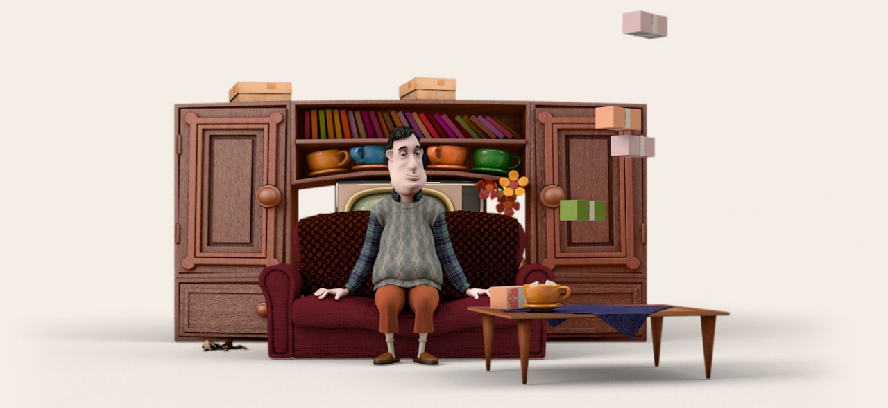
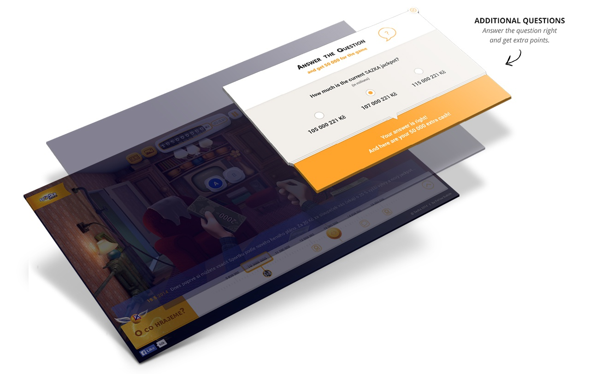

The young generation generally doesn’t play the lottery, and if they do, it’s only after the jackpot reaches the psychological barrier of 100 million CZK. How can we overcome such huge obstacles and create a memorable online campaign? We simply let people experience what it could feel like to win this year’s highest jackpot.
The jackpot, through constant repetition on NTV, became just a number nobody could relate to. Once it was 85 million, next 65, then 87. It was just a number nobody had any emotions toward and nobody could imagine it. They started playing the lottery only after it reached the psychological barrier of 100 million CZK. Sazka wanted people to realize that they shouldn’t wait for such a huge jackpot, when everybody else was playing as well, but rather try their luck when the jackpot is lower.
We therefore created Bahati Nasifu online campaign, which lets people experience what it is like to win the jackpot through a simple endurance game. People had to simply count the money, like you would normally do if you had won it, one banknote after another. Easy, you might say. But the opposite is the truth. If you were fast enough, you could count 12 million banknotes in one hour, and if you wanted to count the entire jackpot all at once, it would take you almost 10 hours.
But for us, the most important thing was to establish real emotions towards money and jackpot that overtime became just a random number. Even after playing for 10 minutes, you start understanding how huuuuuuuge the amount you are counting is and that the 30 million banknotes you counted after 3 hours aren't exactly a little amount of money.
Have a look at the journey from initial concept sketches to the final artwork. It took hours and hours of brainstorming, sketching, 3-D modeling and final renderings.
There were two: the simplicity of the game and virality. Thanks to specially integrated online tools, the game became hugely addictive and viral. You collected special badges based on your actual progress, you compared your progress with your friends, you received motivational messages based on the style, speed and frequency of counting, and all your activity was shared on social media written in a persuasive form, so your friends were motivated to join as well. Thanks to the tools we cleverly integrated into the game, we got more people coming in through activities posted by you on social media than through paid advertising. Below are just a few examples of the content you were creating as you played.
Our focus from the very beginning was clear: to create attractive design but not over-design it. We needed people to instantly understand what the game was about, how they could join the game, and how to play it. These three factors were key to the UI/UX design. To make it attractive and fun to play, we have created Karel, a fictional character through which you could count your millions. We deliberately made him look simple and old-schoolish so people could relate to him as a simple guy who just had luck.
For him, we created two cartoon-stylized environments based on research about where people would be likely to count millions if they had won some. The two most common answers were “my own room” and a “dark shack in the middle of nowhere.” So we made it.
Both environments were modeled in 3D and cartoon stylized to entertain players.

We knew that to keep people motivated counting money for several hours would be the hardest task. We didn’t want people to start and after several minutes say, “It’s impossible,” and leave the game. Our mission was to motivate them to keep counting as much as possible so they experience “owning” more and more money. We therefore created a timeline and a motivational banner.
On the timeline, you could easily track your progress but also see the progress of your friends. We have also included dozens of badges which were carefully placed close to each other so you were motivated to get to the next one. And there was also a motivational banner where we sent you custom messages to keep you going as well as commercial messages about Sazka’s products.
To keep players entertained and focused and also to teach them about Sazka’s games, we placed several questions along the “counting” journey.
